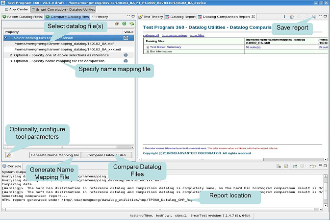

Comparing data log files
This task explains how to generate an HTML report that shows the difference between two data log (STDF or EDL) files.
About this task
The following screenshot illustrates the layout of the Compare Data Log Files tab.

Compare Data Log Files can help you find and view the differences between two data log (STDF or EDL) files.
The input requires two data log files.
The output is a hierarchical, multitiered HTML report that shows differences in test results, bin summaries, wafer map, and so on.
Before you begin
Make sure:
- You use the "S&S_TP360_Plus_SOC" license.
- You have two valid data log (EDL or STDF) files.
Procedure
Results
The HTML report is displayed in the Data log Comparison Report view. By default, it is generated in the directory:
/tmp/.vda/username/datalog_utilities/tmp/TP360_Datalog_CMP_Report/
You can save the report to a different directory by clicking the  icon in the report view.
icon in the report view.
You can refer to Viewing the comparison datalog report for a detailed explanation of the report.
Functional changes
- Introduced in SmarTest 7.3.2